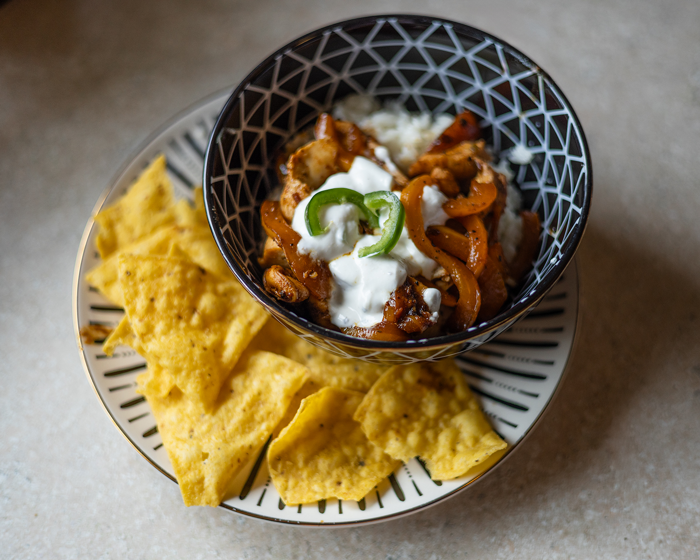
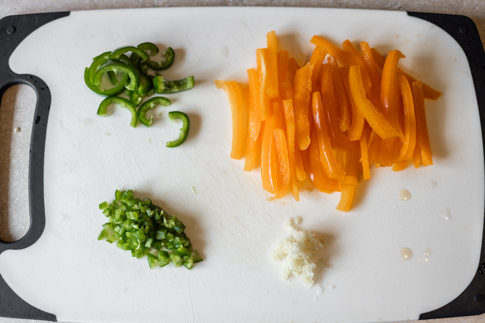
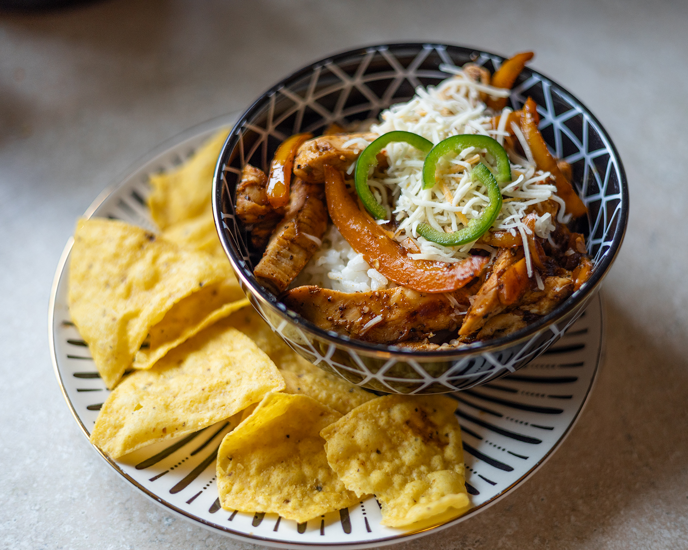

Chicken Fajita Bowls
These delicious bowls are a great way to enjoy the flavors of a fajita without the hassle of assembling tortillas. Perfect for a quick weeknight dinner or meal prep! I like to crumble a few tortilla chips on top for some added crunch. My partner enjoys them topped with a little cheese instead of the crema mixture.

Ingredients
- 2 small/medium bell peppers
- 1 Jalapeño pepper
- 3-4 cloves of garlic
- About a pound of chicken breast, chucnked or thinly sliced
- Fajita Seasoning
- 2 tbsp sour cream
- 1 tsp mayonnaise
- Neutral Oil
- 1 tsp buter or margarine
- 1 cup rice
- Optional tortilla chips
- Optional Mexican Cheese
Instructions
- Wash and prep vegetables: mince garlic cloves, deseed and slice bell peppers. Deseed the jalepeno pepper and mince half, slice the other half and set aside. If you like onion, you can add that in, diced would be ideal for cooking speed.

- Cook Rice: in a small pot add hlaf of the minced garlic and tsp of butter, cook until fragrant. Add rice, stir while continueing to cook over medium heat to coat and lightly toast the rice. Add 2 cups water, cover and reduce to simmer. Use package instructions for timing, but usually around 20 minutes.
- Season the Chicken: in a small bowl, toss the chicken in the fajita seasoning, salt, and pepper until well coated. You can use a packet of fajita seasoning or 1tbsp from a jar. I like Kinder's garlic and lime fajita seasoning.
- In a separate pan over medium heat, heat some oil most ofthe remaining garlic, bell peppers and optional onions. Sautee until almost tender. Add chicken and fully cook, allowing browning. Color equals flavor! Add 3/4 of the minced jalpeno. Remove from heat.
- While the chicken is cooking, make the crema mixture. In a small bowl, combine sour cream, mayo, remaining garlic, remianing minced jalepeno and a pinch of salt and pepper. Add small spashes of water to reach a pourable consistency.
- Once rice is cooked, add desired amount to a bowl, top with the chicken and pepper mixture, and drizzle with the crema. Sliced jalpenos can be added on top for extra heat.
- Enjoy as is or add the tortiila chips and cheese to finish the dish, and enjoy!
